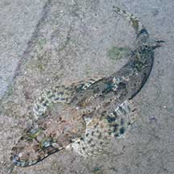
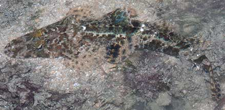
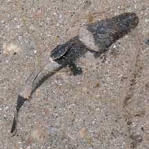
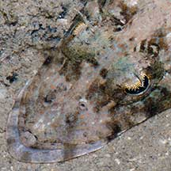
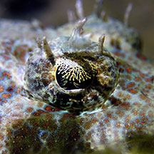
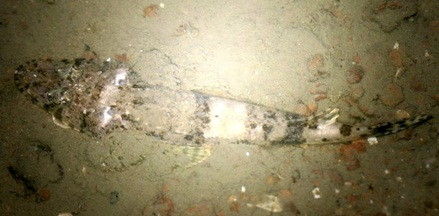
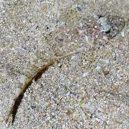
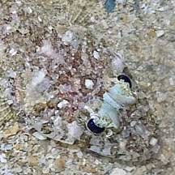
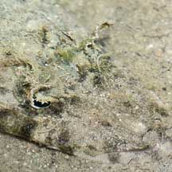

|
|
| fishes text index | photo index |
| Phylum Chordata > Subphylum Vertebrata > fishes > Family Platycephalidae |
| Fringe-eyed
flathead Cymbacephalus nematophthalmus* Family Platycephalidae updated Apr 2020 Where seen? This fish with a flat head and a delicate fringe over its eyes is commonly seen on many of our shores, in sandy and coral rubble areas near reefs. Features: Those seen 6-20cm, but said to reach up to 58cm. Tiny ones about 2cm long have also been seen. Identified by the elaborate golden filigree fringe over the eyeball. Above the eyes 6-9 large fleshy tentacles. It has bony ridges on the head with spines. Colours and pattern are camouflaging, with 7-8 dusky bars on the back and sides and its fins has variegated patterns. Dorsal fin large and sometimes colourful. Sometimes mistaken for other flatheads in the Family such as Thysanophrys sp. As well as other flattened fishes that live on the sea bottom. Here's more on how to tell apart fishes with flat heads. |
 Tanah Merah Ferry Terminal, Jun 11 |
 Sisters Island, May 08 |
 About 2cm long. A juvenile? Tanah Merah, Aug 09 |
 Very large mouth on a large flat head. Elaborate fringe over the eyes. Sisters Island, May 08 |
 Over the eyeball, an elaborate golden filigree fringe. Above the eyes, several fleshy tentacles.Big Sisters Island, Sep 20 Photo shared by Jianlin Liu on facebook. |
| What does it eat? It is carnivorous, feeding on creatures that live on the sea bottom. |
*Species are difficult to positively identify without close examination.
On this website, they are grouped by external features for convenience of display.
| Fringe-eyed flatheads on Singapore shores |
On wildsingapore
flickr
|
| Other sightings on Singapore shores |
 Beting Bronok, May 11 Photo shared by Russel Low on facebook. |
 Kusu Island, May 22 Photo shared by Richard Kuah on facebook. |
 Kusu Island, May 22 Photo shared by Richard Kuah on facebook. |
 Pulau Pawai, Dec 09 |
||
| Filmed in Aug
08 on Pulau Semakau flathead fish@semakau....gone in a flash! from SgBeachBum on Vimeo. |
Links
|